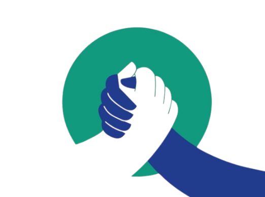

Expresar
Comunicar nuestras ideas y opiniones de manera clara, evitando mensajes confusos o ambiguos.
Una habilidad fundamental para expresar ideas, resolver problemas, trabajar en equipo y construir relaciones profesionales efectivas dentro del desarrollo de software.
Explorar tema ↓La comunicación asertiva es fundamental para el desempeño exitoso de un tecnólogo en Análisis y Desarrollo de Software. Permite la claridad en la transmisión de ideas, facilita la resolución de problemas, fomenta un ambiente de trabajo colaborativo y mejora la relación con clientes y colegas.
En un proyecto de software, las personas deben compartir constantemente información, tomar decisiones, explicar problemas y llegar a acuerdos. Una comunicación deficiente puede generar confusiones, retrasos y conflictos que afectan directamente el desarrollo del proyecto.
Por esta razón, la comunicación asertiva no debe considerarse únicamente una habilidad social, sino también una herramienta profesional que permite al tecnólogo desenvolverse de manera adecuada en diferentes situaciones laborales.
Ser asertivo significa expresar pensamientos, opiniones, necesidades y emociones de manera clara, directa y respetuosa, teniendo en cuenta tanto los propios derechos como los de los demás.
Comunicar nuestras ideas y opiniones de manera clara, evitando mensajes confusos o ambiguos.
Defender nuestras ideas sin ignorar ni desvalorizar las opiniones de las demás personas.
Prestar atención a las necesidades y opiniones de otros para comprender mejor cada situación.
La persona puede tener una opinión o necesidad, pero evita expresarla por miedo al conflicto o por no querer generar incomodidad.
La persona expresa claramente su posición, escucha otras perspectivas y busca soluciones mediante el diálogo.
La persona comunica sus ideas de manera dominante, ignorando o desvalorizando las opiniones de los demás.
Durante el desarrollo de software, el tecnólogo debe comunicarse constantemente con compañeros de equipo, líderes de proyecto, clientes y otros profesionales.
Por esta razón, saber expresar una idea técnica de manera clara y comprensible es tan importante como tener conocimientos de programación.
Explicar requisitos
Informar problemas técnicos
Presentar avances
Proponer soluciones
Comunicar cambios
Negociar tiempos de entrega
Cada una de estas situaciones forma parte del trabajo cotidiano de un tecnólogo en Análisis y Desarrollo de Software.
Comunicar claramente qué necesita el proyecto permite reducir errores y retrabajos.
Compartir ideas respetando las opiniones permite construir mejores soluciones.

El diálogo permite buscar soluciones cuando aparecen diferencias dentro del proyecto.
Dar y recibir retroalimentación ayuda al aprendizaje y a la mejora del producto.
Comprender necesidades y gestionar expectativas facilita una relación profesional.
Comunicar las necesidades del proyecto permite establecer acuerdos realistas.
Una misma situación puede generar resultados muy diferentes dependiendo de la manera en que se comunique.
"Pues así funciona el sistema, no puedo hacer nada."
"Podemos revisar qué procesos están generando mayor tiempo de respuesta y analizar diferentes alternativas para mejorar el rendimiento."
"Eso no sirve. Mejor hazlo como yo dije."
"Entiendo tu propuesta. Revisemos las dos alternativas y comparemos cuál se adapta mejor a los requisitos."
"No puedo hacerlo y ya."
"Para entregar esta funcionalidad con la calidad esperada necesitamos más tiempo. Podemos revisar qué tareas tienen prioridad."
Expresar las ideas, necesidades y problemas de manera clara.
Escuchar diferentes perspectivas y construir soluciones en conjunto.
Convertir las necesidades y propuestas en soluciones de software.
Entregar un producto que responda a las necesidades del usuario.
En resumen, la comunicación asertiva es una habilidad esencial para un tecnólogo en Análisis y Desarrollo de Software, ya que contribuye a un trabajo más eficiente, colaborativo y exitoso.
Un tecnólogo no trabaja únicamente con código. También trabaja con personas, ideas, necesidades y problemas. Por ello, desarrollar una comunicación asertiva permite transformar conocimientos técnicos en soluciones que realmente respondan a las necesidades de un equipo y de sus usuarios.
Una buena idea puede iniciar un proyecto, pero una buena comunicación puede ayudar a llevarlo hasta el final.
Comunicación asertivaTexto
La comunicación clara permite que las ideas puedan convertirse en soluciones concretas.